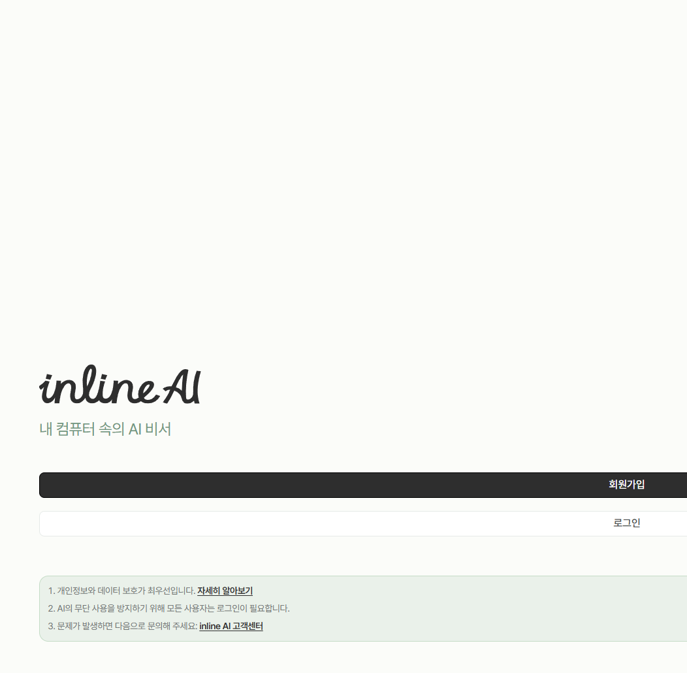
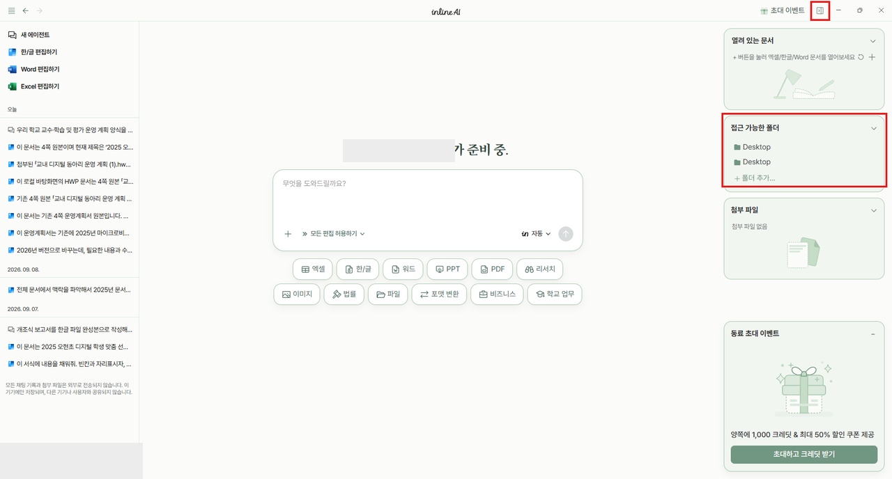
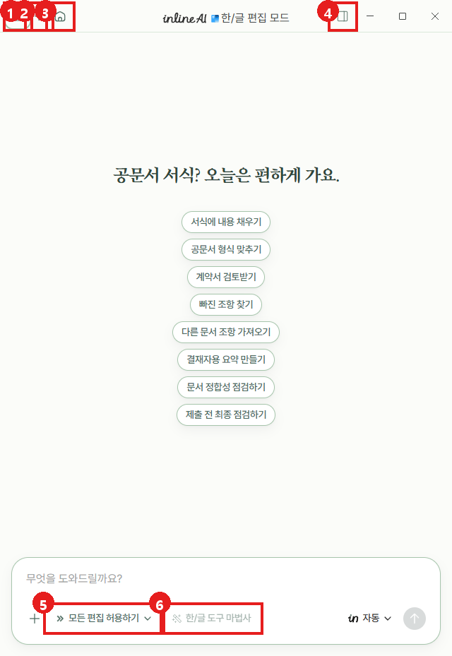

← 홈지금 여기 · 2 시작 준비 › 2 준비2 / 13
STEP 2 · 준비
시작 준비
AI를 내 컴퓨터에
실습 자료 받기, 설치·가입, 폴더 초대, 지시사항까지. 여기만 따라 하면 끝나요.
📦 실습 자료
실습 자료는 이것 하나만 받아요
받아서 바탕화면에 압축을 풀면 inlineAI_실습 폴더가 생겨요. 실습 01~09 파일이 모두 들어 있어요.
여섯 단계면 준비 끝
- 1
설치
inline-ai.com → 위쪽 개인용 → Windows용 다운로드 → 받은 파일 두 번 클릭.
막히면: 마우스 오른쪽 관리자 권한으로 실행 · 파란 창은 추가 정보 → 실행 · 와이파이가 느리면 핫스팟.
- 2
로그인
inline AI를 켜고 계정을 만들거나 로그인해요. 가운데 입력창이 보이면 성공. 아래 일 버튼(학교 업무 등)은 누르면 바로 실행되니 구경만.

- 3
초대 코드
초대 링크로 들어가거나 앱 위쪽 초대 이벤트에 코드 K2YERY3H. 무료 1,000 크레딧을 더 받아요.
- 4
폴더는 하나만 초대
오른쪽 위 네모(작업 패널) → 접근 가능한 폴더 → 폴더 추가… → 바탕화면 inlineAI_실습 하나만 골라요.
다른 폴더 · 바탕화면 전체 · 다운로드 폴더는 등록하지 마세요. (그림은 강사 PC라 Desktop이 보여요)
- 5
승인 모드는 확인만
입력창 아래가 모든 편집 허용하기로 되어 있는지 확인만 해요. 그대로 둬요. 대신 폴더를 실습 폴더 하나로 막아 두고, 고치기 전에 목록을 먼저 받아요.

- 6
지시사항 붙이기
아래 짧은판을 이 사이트에서 [복사] → 왼쪽 아래 내 이름 → 설정 → 일반 설정 → inline AI 지시사항에 Ctrl+V. 모든 대화에 적용돼요.

📋 복사해서 쓰기
지시사항 — 기본 지침 짧은판
복사해서 설정 → 일반 설정 → inline AI 지시사항에 한 번만 붙여 넣어요. 연수가 끝나면 지워도 돼요.
안전장치 세 가지
승인 모드는 '모든 편집 허용하기' 그대로. 대신 이 세 가지로 지켜요.
접근 가능한 폴더는 inlineAI_실습 하나. 그 밖은 AI가 못 봐요.
지시사항에 '새 이름으로 저장'이 들어 있어요.
'고치기 전에 목록으로 먼저 보여 줘. 아직 고치지 마.'
오늘의 약속: 실습이 바뀌면 새 에이전트 · 한글 파일은 하나만 열기 · 엑셀은 MS 엑셀 · 모델은 자동 그대로
🧭 업무 지침
00_업무지침 — AI의 업무 매뉴얼
AI가 일하기 전에 먼저 읽는 업무 매뉴얼이에요. inlineAI_실습 안에 들어 있어서 폴더를 초대하면 같이 들어가요.
지시사항에 붙여 매번 같은 규칙으로
경기도교육청 원문 PDF — 근거 자료
규정을 AI가 읽기 좋게 정리 — 기안문 표기·점검표
쓰는 법은 한 줄: "00_업무지침 폴더의 규칙을 따라서, 열려 있는 계획서로 기안문 본문을 써 줘."